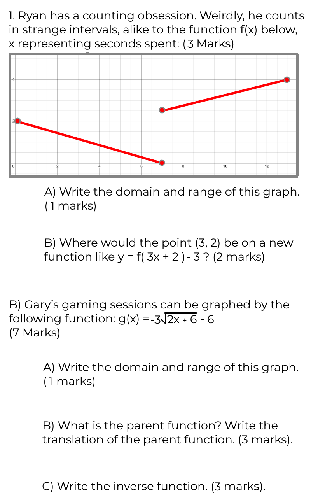
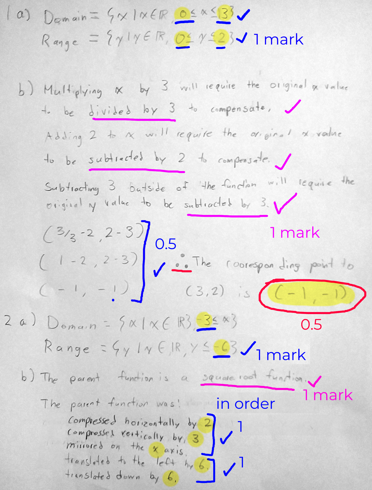
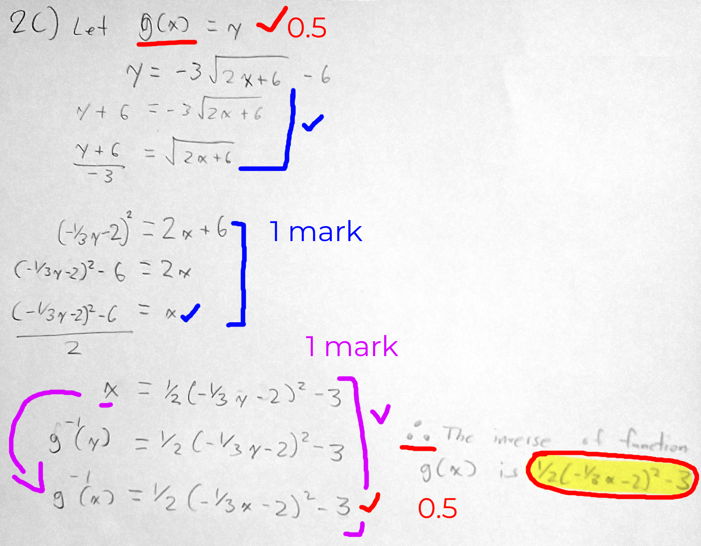

Chapter 1 - Functions (Step 4/4)
Great JOB! the prize is right at your nose, 100% of your way th...
Wait... did I do the math, wrong?
Review

Questions
As you solve the questions, round all calculations to the nearest tenth.

Click here to see the answers.
1A) Domain can be any real number between 0 and 13, Range can be any real number between 0 and 2.
B) The cooresponding point is (-1, -1).
2A) Domain can be any real number larger or equal than -3, Range can be any real number smaller or equal than -6.
B) The parent function was compressed horizontally by 2 and vertically by 3; mirrored on the x axis; and translated to the left by 6 and down by 6.
C) The inverse function is 1/2(-1/3 x - 2)² - 3

